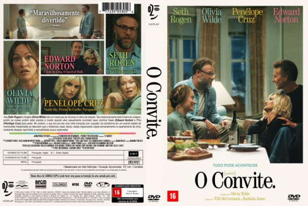

![link to O Convite [Autorado] on Rotten Tomatoes](../img/tomatoes.png)
![link to O Convite [Autorado] on TheMovieDb](../img/themoviedb.png)

Outro Título:The Invite
País:United States, 107 minutos
Idiomas falados:Inglês, Português
Gênero(s):Comédia, Drama, Romance
Diretor(s):Olivia Wilde
Escritor(es):Rashida Jones, Will McCormack
Codec:MPEG-2 (DVD)
Número: 5965


Certificado:16
Sinopse:
Em O Convite, dirigido por Olivia Wilde, Joe (Seth Rogen) e Angela (Olivia Wilde) são um casal que se vê preso à rotina da relação. Seu relacionamento está à beira do colapso, porém as coisas podem estar prestes a mudar quando eles casualmente convidam seus vizinhos Hawk (Edward Norton) e Piña (Penélope Cruz) para jantar. No entanto, o que era pra ser uma noite tranquila com coquetel, se transforma em um evento repleto de reviravoltas inesperadas ao descobrir que o misterioso casal, talvez, esteja organizando orgias semanalmente no apartamento de cima, revelando desejos reprimidos e sexualidades pouco exploradas.
Elenco:


Tipo de mídia: DVD5,
Legendas: Português, Sem Legendas
Alugado: Não
Tela: Anamorphic Widescreen